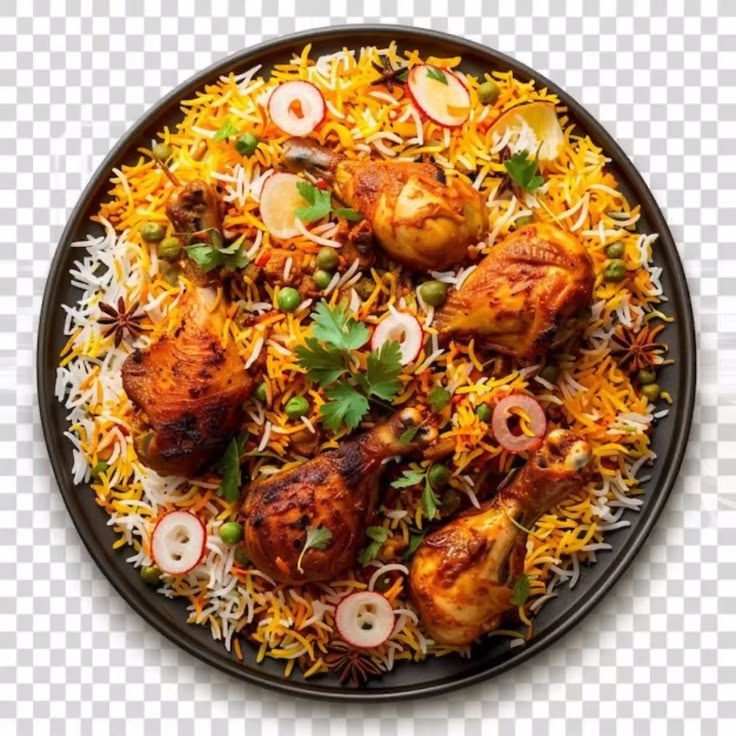

About us
Where good food meets grand occasions.

An elegant stop on the Mumbai–Nashik Expressway.
The Vista Grand is a multi-cuisine fine dine restaurant with banquet halls and a wedding lawn near Anjur. Guests come for flavourful food, a beautifully maintained ambience and live music that turns dinner into an evening.
0Google rating
0Guest reviews
0Ways to celebrate

The restaurant
Flavour first, always.
A multi-cuisine kitchen known for dhaba-style taste, biryanis, thalis and wok-fired favourites, served in an elegant dining room with live music.
Dine-in
Comfortable, stylish seating.
Kerbside pickup
Collect without leaving your car.
No-contact delivery
Safe, simple doorstep service.
Welcoming to all
An LGBTQ+ friendly space.
Banquet & lawn
Made for moments.
Birthdays, engagements, receptions and weddings — every table gets the same attention, from the first welcome to the last dessert.
What we stand for
Our promise.
01
Taste
Generous, honest flavours made fresh.
02
Ambience
An elegant, well-kept space guests remember.
03
Service
Attentive teams who care about your event.